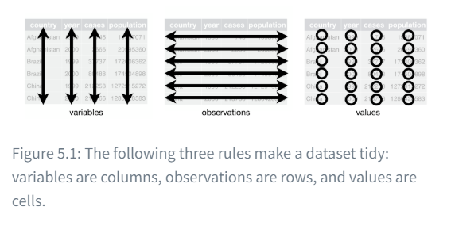
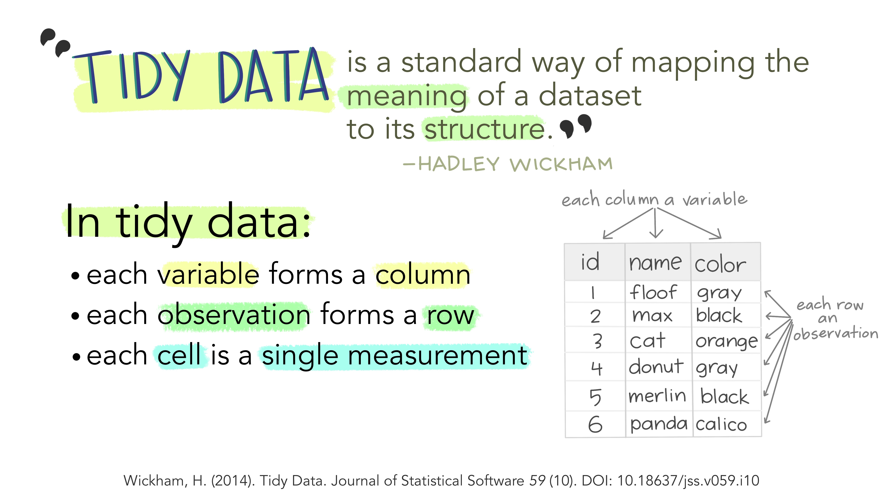
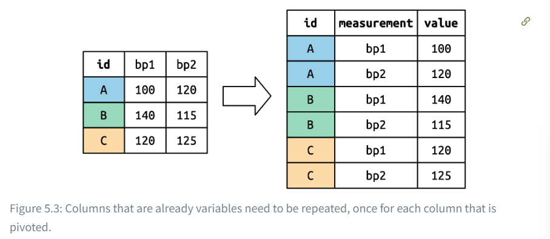
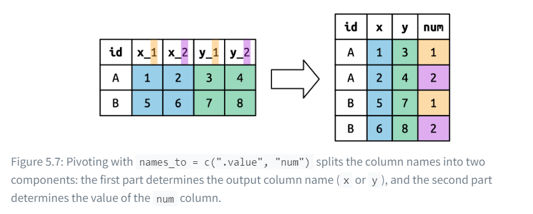
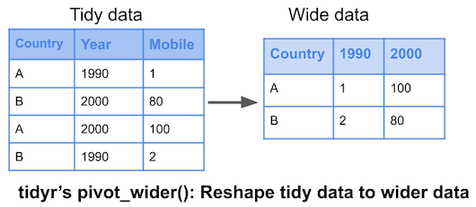

You can also use “or” reasoning so a condition is either one or the other. Use the straight line (|) for the “or” reasoning. Note that this yields more results than the and reasoning.
flights %>%filter(dep_delay >1| origin =="JFK") # either has a departure delay > 1 OR is coming from JFK
the arrange() command changes the order of the rows based on the value of the columns. For example, this one below arranges the year, month, and day by departure delay.
You can also use the count() command to find the number of occurrences instead.
flights %>%count(origin, dest, sort=TRUE)
# A tibble: 224 × 3
origin dest n
<chr> <chr> <int>
1 JFK LAX 11262
2 LGA ATL 10263
3 LGA ORD 8857
4 JFK SFO 8204
5 LGA CLT 6168
6 EWR ORD 6100
7 JFK BOS 5898
8 LGA MIA 5781
9 JFK MCO 5464
10 EWR BOS 5327
# ℹ 214 more rows
1.3 Columns
There are four functions we can use to change columns without affecting the rows.
mutate()
select()
rename()
relocate
1.3.1mutate()
First I’m going to use mutate. Mutate is used when you want to add new columns calculated from other ones. I want to add three new columns: gain, hours, and gain_per_hr.
flights %>%mutate( gain = dep_delay - arr_delay, hours = air_time /60, gain_per_hour = gain / hours, .keep ="used"# indicates that I want to keep the columns I used in the function. )
If you have a bunch of inconsistently named columns and it would be painful to fix them all by hand, check out janitor::clean_names()which provides some useful automated cleaning.
1.3.4relocate()
You can use relocate to, well, relocate variables within the table.
If you look at the top, you can see Groups:month [12] indicating that the output is “grouped by” month. So subsequent operations will now group by month.
1.4.2summarize()
the summarize function allows us to calculate a single summary statistic, which reduces the dataframe to have a single row for each group.
flights %>%group_by(month) %>%summarize(avg_delay =mean(dep_delay, na.rm =TRUE) # make sure to get rid of NA values )
Since we already loaded tidyverse once, we don’t need to do it again, but we do need to use tidyr for this.
2.2 Why tidy data?
There are two main advantages to tidying data.
Consistency in storing data helps you learn the tools that work with it since they have an underlying uniformity
Placing variables in columns allows R to work more naturally since you are working with vectors of values.


It turns raw, disorganized data into a structured format where every variable is a column, each observations is a row, and each observational unit is in a table. This saves time and enhances accuracy. It’s sort of like sorting food based on food group in your kitchen, so it is easier to access cook with them.
2.3 Lengthening, widening, and pivoting data
2.3.1pivot_longer()
For this, we’re going to use the messy datasets. Note that messy ≠ missing data! Data can just be duplicated, miss titles, or have typos.
billboard # load up the billboard dataset from the tidyr datasets
Next, we are going to use pivot_longer(). For this one, every observation is a single song. The first three columns (artist, track, date.entered) are variables that describe the song. Then we have 76 other columns, wk1-wk76, that describe the rank of each song for each week. However, since there so many columns as seen below, we are going to use pivot_longer organize the columns into values.
billboard %>%pivot_longer(cols =starts_with("wk"), names_to ="week", # organizesvalues_to ="rank" )
The data is tidy now, BUT we could also parse the week numbers as actual numbers using parse_number in the mutate function. This will extract the numbers from a string.
We are going to make a tribble() for this, so it’s easier to understand. Let’s say we have two trials in which participants’ sleep was recorded in a small experiment (in hrs):
# A tibble: 8 × 3
name trial `duration (hrs)`
<chr> <chr> <dbl>
1 Bob sleep1 8.5
2 Bob sleep2 8.2
3 Ted sleep1 7.1
4 Ted sleep2 7.5
5 Carol sleep1 6.2
6 Carol sleep2 7.1
7 Alice sleep1 8.1
8 Alice sleep2 8.7
So in short it looks something like this:

2.3.1.2 Multiple variables
Having multiple variables can a be a bit more tricky. Let’s use the who2 dataset for example:
who2
# A tibble: 7,240 × 58
country year sp_m_014 sp_m_1524 sp_m_2534 sp_m_3544 sp_m_4554 sp_m_5564
<chr> <dbl> <dbl> <dbl> <dbl> <dbl> <dbl> <dbl>
1 Afghanistan 1980 NA NA NA NA NA NA
2 Afghanistan 1981 NA NA NA NA NA NA
3 Afghanistan 1982 NA NA NA NA NA NA
4 Afghanistan 1983 NA NA NA NA NA NA
5 Afghanistan 1984 NA NA NA NA NA NA
6 Afghanistan 1985 NA NA NA NA NA NA
7 Afghanistan 1986 NA NA NA NA NA NA
8 Afghanistan 1987 NA NA NA NA NA NA
9 Afghanistan 1988 NA NA NA NA NA NA
10 Afghanistan 1989 NA NA NA NA NA NA
# ℹ 7,230 more rows
# ℹ 50 more variables: sp_m_65 <dbl>, sp_f_014 <dbl>, sp_f_1524 <dbl>,
# sp_f_2534 <dbl>, sp_f_3544 <dbl>, sp_f_4554 <dbl>, sp_f_5564 <dbl>,
# sp_f_65 <dbl>, sn_m_014 <dbl>, sn_m_1524 <dbl>, sn_m_2534 <dbl>,
# sn_m_3544 <dbl>, sn_m_4554 <dbl>, sn_m_5564 <dbl>, sn_m_65 <dbl>,
# sn_f_014 <dbl>, sn_f_1524 <dbl>, sn_f_2534 <dbl>, sn_f_3544 <dbl>,
# sn_f_4554 <dbl>, sn_f_5564 <dbl>, sn_f_65 <dbl>, ep_m_014 <dbl>, …
This dataset covers tuberculosis diagnoses. We already have country and year, but the other ones are tricky. The “m” and “f” stand for male and female respectively, and the sp/rel/ep show the method of diagnosis.
So we are going to convert these to method of diagnosis, sex, and age.
# A tibble: 405,440 × 6
country year diagnosis sex age count
<chr> <dbl> <chr> <chr> <chr> <dbl>
1 Afghanistan 1980 sp m 014 NA
2 Afghanistan 1980 sp m 1524 NA
3 Afghanistan 1980 sp m 2534 NA
4 Afghanistan 1980 sp m 3544 NA
5 Afghanistan 1980 sp m 4554 NA
6 Afghanistan 1980 sp m 5564 NA
7 Afghanistan 1980 sp m 65 NA
8 Afghanistan 1980 sp f 014 NA
9 Afghanistan 1980 sp f 1524 NA
10 Afghanistan 1980 sp f 2534 NA
# ℹ 405,430 more rows
2.3.1.3 Data and variable names in the column headers
Another tricky thing is when the column names include a mix of variable values and names. For example, look at the household dataset:
household
# A tibble: 5 × 5
family dob_child1 dob_child2 name_child1 name_child2
<int> <date> <date> <chr> <chr>
1 1 1998-11-26 2000-01-29 Susan Jose
2 2 1996-06-22 NA Mark <NA>
3 3 2002-07-11 2004-04-05 Sam Seth
4 4 2004-10-10 2009-08-27 Craig Khai
5 5 2000-12-05 2005-02-28 Parker Gracie
Note how two of the columns contain two variables (dob, name) and the values of another (child, with values 1 or 2). We need to use the .value sentinel. This is where it tells pivot to override the usual values_to argument which uses the first component of the pivoted column name as a variable name.
household %>%pivot_longer(cols =!family, names_to =c(".value", "child"), # sseparate the dob from child names_sep ="_", values_drop_na =TRUE )
# A tibble: 9 × 4
family child dob name
<int> <chr> <date> <chr>
1 1 child1 1998-11-26 Susan
2 1 child2 2000-01-29 Jose
3 2 child1 1996-06-22 Mark
4 3 child1 2002-07-11 Sam
5 3 child2 2004-04-05 Seth
6 4 child1 2004-10-10 Craig
7 4 child2 2009-08-27 Khai
8 5 child1 2000-12-05 Parker
9 5 child2 2005-02-28 Gracie
If it’s still confusing, it can be summarized this way:

2.3.2pivot_wider()
Right now we’ve used pivot_longer() to solve the issue of values ending up as column names. Next, we’ll use pivot_wider, which makes datasets wider by increasing columns and reducing rows. This is very common in governmental data. For example, lets use the cms_patient_experience dataset:
cms_patient_experience
# A tibble: 500 × 5
org_pac_id org_nm measure_cd measure_title prf_rate
<chr> <chr> <chr> <chr> <dbl>
1 0446157747 USC CARE MEDICAL GROUP INC CAHPS_GRP… CAHPS for MI… 63
2 0446157747 USC CARE MEDICAL GROUP INC CAHPS_GRP… CAHPS for MI… 87
3 0446157747 USC CARE MEDICAL GROUP INC CAHPS_GRP… CAHPS for MI… 86
4 0446157747 USC CARE MEDICAL GROUP INC CAHPS_GRP… CAHPS for MI… 57
5 0446157747 USC CARE MEDICAL GROUP INC CAHPS_GRP… CAHPS for MI… 85
6 0446157747 USC CARE MEDICAL GROUP INC CAHPS_GRP… CAHPS for MI… 24
7 0446162697 ASSOCIATION OF UNIVERSITY PHYSI… CAHPS_GRP… CAHPS for MI… 59
8 0446162697 ASSOCIATION OF UNIVERSITY PHYSI… CAHPS_GRP… CAHPS for MI… 85
9 0446162697 ASSOCIATION OF UNIVERSITY PHYSI… CAHPS_GRP… CAHPS for MI… 83
10 0446162697 ASSOCIATION OF UNIVERSITY PHYSI… CAHPS_GRP… CAHPS for MI… 63
# ℹ 490 more rows
Notice how the organization is spread across six rows. Each row is for each measurement taken in the organization. We can see the complete set of values for measure_cd and measure_title by using distinct():
# A tibble: 6 × 2
measure_cd measure_title
<chr> <chr>
1 CAHPS_GRP_1 CAHPS for MIPS SSM: Getting Timely Care, Appointments, and Infor…
2 CAHPS_GRP_2 CAHPS for MIPS SSM: How Well Providers Communicate
3 CAHPS_GRP_3 CAHPS for MIPS SSM: Patient's Rating of Provider
4 CAHPS_GRP_5 CAHPS for MIPS SSM: Health Promotion and Education
5 CAHPS_GRP_8 CAHPS for MIPS SSM: Courteous and Helpful Office Staff
6 CAHPS_GRP_12 CAHPS for MIPS SSM: Stewardship of Patient Resources
Neither of these columns are good variable names. We’re going to use measure_cd, but in real analysis you need better, shorter names.
pivot_wider() has the opposite to pivot_longer(). So instead of choosing new column names, we provide existing columns that define the values and the column name.
# A tibble: 500 × 9
org_pac_id org_nm measure_title CAHPS_GRP_1 CAHPS_GRP_2 CAHPS_GRP_3
<chr> <chr> <chr> <dbl> <dbl> <dbl>
1 0446157747 USC CARE MEDICA… CAHPS for MI… 63 NA NA
2 0446157747 USC CARE MEDICA… CAHPS for MI… NA 87 NA
3 0446157747 USC CARE MEDICA… CAHPS for MI… NA NA 86
4 0446157747 USC CARE MEDICA… CAHPS for MI… NA NA NA
5 0446157747 USC CARE MEDICA… CAHPS for MI… NA NA NA
6 0446157747 USC CARE MEDICA… CAHPS for MI… NA NA NA
7 0446162697 ASSOCIATION OF … CAHPS for MI… 59 NA NA
8 0446162697 ASSOCIATION OF … CAHPS for MI… NA 85 NA
9 0446162697 ASSOCIATION OF … CAHPS for MI… NA NA 83
10 0446162697 ASSOCIATION OF … CAHPS for MI… NA NA NA
# ℹ 490 more rows
# ℹ 3 more variables: CAHPS_GRP_5 <dbl>, CAHPS_GRP_8 <dbl>, CAHPS_GRP_12 <dbl>
So in other words, it did something like this:

We still have multiple rows for organization, so we need to tell pivot_wider which columns uniquely identify each row. So it’s the values that start with “org”: